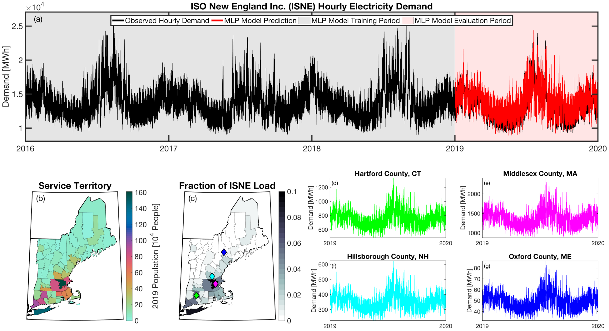

User Guide
This user guide is meant to explain how tell works and the concepts that it is built upon. More information about how to run the model can be found in the tell quickstarter notebook that contains detailed step-by-step instructions on how to run tell.
About tell
The Total ELectricity Load (tell) model projects the short- and long-term evolution of hourly electricity demand in response to future changes in weather and climate. The purpose of tell is to generate end-of-century hourly profiles of electricity demand across the entire Conterminous United States (CONUS) at a spatial resolution adequate for input to a unit commitment/economic dispatch (UC/ED) model while also maintaining consistency with the long-term growth and evolution of annual state-level electricity demand projected by an economically driven human-Earth system model. tell takes as input future projections of the hourly time-series of meteorology and decadal populations and uses the temporal variations in weather to project hourly profiles of total electricity demand. The core predictions in tell are based on a series of multilayer perceptron (MLP) models for 54 independent Balancing Authorities (BAs). Those MLP models are trained on historical observations of weather and electricity demand. Hourly projections from tell are scaled to match the annual state-level total electricity loads projected by the U.S. version of the Global Change Analysis Model (GCAM-USA) which captures the long-term co-evolution of the human-Earth system. Using this unique approach allows tell to reflect both changes in the shape of the load profile due to variations in weather and the long-term evolution of energy demand due to changes in population, technology, and economics. tell is unique from other load forecasting models in that it features an explicit spatial component that allows it to relate projected loads to where they would occur spatially within a grid operations model. The output of tell is a series of hourly projections of future electricity demand at the county-, state-, and BA-scale that are conceptually and quantitatively consistent with one another.
tell was designed to work using data from 54 BAs the U.S. and in conjunction with the GCAM-USA model. Thus, it is not immediately extensible to other countries (e.g., in Europe). However, the fundamental modeling approach based on MLP models trained on historical loads and meteorology data could easily be adapted to work in other regions with sufficient data.
How It Works
The basic workflow for tell proceeds in six sequential steps:
Formulate empirical models that relate the historical observed meteorology to the hourly time-series of total electricity demand for 54 BAs that report their hourly loads in the EIA-930 dataset.
Use the empirical models to project future hourly loads for each BA based on IM3’s climate and population scenarios.
Distribute the hourly loads for each BA to the counties that BA operates in and then aggregate the county-level hourly loads from all BAs into annual state-level loads.
Calculate annual state-level scaling factors that force the bottom-up annual state-level total loads from tell to match the annual state-level total loads from GCAM-USA.
Apply the state-level scaling factors to each county- and BA-level time-series of hourly total demand.
Output yearly 8760-hr time-series of total electricity demand at the state-, county-, and BA-scale that are conceptually and quantitatively consistent with each other.
Design Constraints
tell was designed with the following constraints:
Topic |
Requirement |
|---|---|
Spatial resolution and scope |
Should cover the entire U.S. (excluding Alaska and Hawaii) and produce demands at an appropriately high spatial resolution for input into a nodal UC/ED model |
Temporal resolution and scope |
Should produce hourly projections of total electricity demand in one-year increments through the year 2100. |
Forcing factors |
Projections should respond to changes in meteorology and climate. |
Multiscale consistency |
Should produce hourly total electricity demand at the county-, state-, and BA-scale that are conceptually and quantitatively consistent with each other. |
Open-source |
Should be based entirely on publicly available data and be made available as an extensively-documented open-source model. |
Fundamental Concepts
The following are the building blocks of how tell projects future loads.
{kind=link}
{kind=link}
{kind=link}
{kind=link}
{kind=link}
{kind=link}
{kind=link}
{kind=link}
{kind=link}
{kind=link}
{kind=link}
{kind=link}
{kind=link}
{kind=link}
{kind=link}
{kind=link}
{kind=link}
{kind=link}
{kind=link}
{kind=link}
{kind=link}
{kind=link}
{kind=link}
{kind=link}
{kind=link}
{kind=link}
{kind=link}
{kind=link}
{kind=link}
{kind=link}
{kind=link}
{kind=link}
{kind=link}
{kind=link}
{kind=link}
{kind=link}
{kind=link}
{kind=link}
{kind=link}
{kind=link}
{kind=link}
{kind=link}
{kind=link}
{kind=link}
{kind=link}
{kind=link}
{kind=link}
{kind=link}
{kind=link}
{kind=link}
{kind=link}
{kind=link}
{kind=link}
{kind=link}
Geolocating Balancing Authorities
As a spatially-explicit model, tell needs the ability to geolocate the loads it projects. Since the fundamental projections in tell occur at the spatial scale of BAs, we needed to devise a way to determine where each BA operated within the U.S. For tell, being able to do this geolocation using county boundaries has a number of benefits in terms of load disaggregation and reaggregation - so we focused on techniques to map BAs to the counties they operate in. While there are multiple maps of BA service territories available online, there are several fundamental challenges to using maps generated by others:
1. The provenance of the data and methodology underpinning most of the maps is unknown. In other words, there is no way to determine how the BAs were placed and if the methods used to do so are robust.
2. The maps often depict the BAs as spatially unique and non-overlapping. For a county-scale mapping at least, we know this to be untrue. Additionally, the maps are typically static representations of how BAs were configured at a single point in time. As the actual territory of BAs can and does change over time, this presents challenges for placing BA loads occurring over a range of years.
3. Maps available online are often cartoon or stylized versions of reality with curvy lines that do not follow traditional geopolitical boundaries. As such, to go from the cartoon map to an actual list of counties that a BA operates in would necessitate a number of subjective decisions that are not reproducible from person to person.
Given these limitations, we devised our own method to geolocate BAs in tell. We eventually found a publicly available dataset from the EIA that served as our foundation. The EIA-861 dataset is an annual report describing the characteristics of the electric power industry in the U.S. Among other information, EIA-861 contains two sets of data that are critical to tell:
The “Service_Territory_YYYY.xlsx” spreadsheet provides a list of every county that a given utility operates in:

The “Sales_Ult_Cust_YYYY.xlsx” spreadsheet provides the BA that each utility reports to in a given state:

Using these two datasets in combination, tell reverse engineers the counties that each BA likely operated in within a given year. In addition to being completely objective and reproducible, this method overcomes the limitations described above because it allows more than one BA to be mapped to a single county and also allows the geolocation of BAs to evolve over time. tell maps BA service territory annually from 2015-2020. The results of that mapping are summarized graphically in the map below. The spatial extent of each BA in 2019 is shown in the link for each BA in the table above.

This figure shows the number of BAs that tell identifies as operating within each county in 2019. The bottom panel shows an example
of four different BAs reported operating in Brevard County, FL. While the majority of counties only have one BA identified, some counties
have as many as five. Note that a handful of counties had zero BAs identified as operating within them in 2019. Because we think these
BA-to-county mappings may be useful to many others the output files from the mapping process are included as .csv files below. They can be
reproduced within the tell package by running the tell.map_ba_service_territory function.
Year |
File |
|---|---|
2015 |
|
2016 |
|
2017 |
|
2018 |
|
2019 |
|
2020 |
Load Disaggregation and Reaggregation
tell uses multiple instances of load disaggregation and reaggregation in order to cross spatiotemporal scales. The fundamental projections in tell occur at the spatial scale of BAs. In order to compare those hourly load values at the BA-level with the annual state-level load values produced by GCAM-USA, we first disaggregate the hourly projected BA-level loads to the county-level and then reaggregate those hourly county-level loads to an annual total load projection for each state. For each BA we identify the counties that BA operates in using the methodology described above. We then use the county-level populations for those counties to determine the fraction of the BA’s total load that should be assigned to each county. A graphical depiction of this for the ISNE BA is shown below. Using this approach, the load received by each county in a BA’s service territory has the same shape and temporal patterns, but the magnitude varies depending on the population in that county relative to the total population in the BA’s service territory. As there are spatial overlaps in BAs, many counties receive partial loads from more than one BA.
{kind=link}
Once the load projections from all BAs in tell have been disaggregated to the county-level, we next sum up the loads from all counties in a given state to get annual state-level total loads which are scaled to match the projections from GCAM-USA. The scaling factors for each state are then applied to all county- and BA-level hourly load values in that state. The final output of tell is thus a series of 8760-hr time series of total electricity loads at the county-, state-, and BA-scale that are conceptually and quantitatively consistent with each other.
It is important to note that the future evolution of population is also taken into account in tell. Projected annual changes in population for each county and state are generated using the Shared Socioeconomic Pathways (SSPs) scenarios. Those future populations are used to derive new weighting factors to be used in disaggregating and reaggregating future tell loads. Thus, in an scenario where lots of people move to, for example, Southern California, the counties there would not only receive a higher proportion of the BA-level loads for BAs operating there, but would also have an incrementally larger impact on the future total hourly load profile for California as a whole.
Multilayer Perceptron (MLP) Models
tell uses a series of multilayer perceptron (MLP) models to project future loads. There is one unique MLP model for each BA. The MLP model for each BA is trained and evaluated independently. The MLP models are trained on historical load data from the EIA-930 dataset and weather from IM3’s historical runs using the Weather Research and Forecasting (WRF) model. In the production version of tell the MLP models for each BA were trained on data from 2016-2018 and evaluated against observed loads from 2019. While the EIA-930 data extends past the year 2019, COVID-19 induced significant changes in the diurnal profile of electricity demand (e.g., Burleyson et al. 2021) so we opted not to use 2020+ data in the MLP model training or evaluation. In the future, tell could be retrained repeatedly as more and more EIA-930 data becomes available.
Details of the MLP predictive variables are included in the table below. The default parameter settings for training the MLP models are stored in the mlp_settings.yml file in /data folder in the tell repository. The hyperparameters for the tell MLP models (e.g., hidden layer sizes, maximum iterations, and validation fraction) were determined using a grid search approach. Hyperparameters were allowed to vary across BAs. Default hyperparameters for each BA are also included in the /data/models folder in the tell repository.
Variable |
Description |
Units/Format |
|---|---|---|
Temperature |
2-m temperature from WRF (T2) |
K |
Specific humidity |
2-m water vapor mixing ratio from WRF (Q2) |
kg kg -1 |
Shortwave radiation |
Downwelling shortwave radiative flux at the surface from WRF (SWdn) |
W m -2 |
Longwave radiation |
Downwwelling longwave radiative flux at the surface from WRF (GLW) |
W m -2 |
Wind speed |
10-m wind speed derived from the U and V wind components from WRF (U10 and V10) |
m s -1 |
Hour of the day |
Hour of the day in UTC |
00-23 UTC |
Day of the week |
Is the day a weekday or weekend? |
Weekdays (1) or Weekends (0) |
Federal holiday |
Is the day a federal holiday? |
Yes (1) or No (0) |
In general, the tell empirical models work quite well. 76% (41/54) of the BAs have an R2 value greater than 0.75 while 83% (45/54) have a MAPE under 10%.
{kind=link}
It’s illustrative to look at the error metrics as a function of load. To do this, we calculate the mean hourly load for each BA during the evaluation year and then plot the error statistics as a function of that mean load. Analyzing the data in this way demonstrates that the BAs with the poorly performing empirical models are almost universally the smaller BAs. The largest BAs, which are critically important for the overall demand on the grid, generally perform quite well. Of the 10 BAs with the largest mean demand, 9/10 have a MAPE value under 5% and an R2 value greater than 0.85. Conversely, of the 10 worst performing BAs (judged by their MAPE value), 7/10 have an average hourly load less than 1700 MWh.
{kind=link}
Because the empirical models that underpin tell are so critically important we created a separate analysis notebook where users can explore the model’s performance characteristics collectively and for individual BAs. The MLP calibration and evaluation notebook can be found here.
Incorporating Detailed Sectoral Models
By design tell projects future time-series of the total hourly load at different spatial scales. These total loads are responsive to variations in population and climate. It is important to note that tell does not resolve the load profiles for individual sectors of the electric industry (e.g., residential, commercial, industrial, and commercial). However, the model is designed so that it can be modified to reflect changes in these individual sectors in a relatively straightforward way. We know that technologies in each of these sectors are currently and are likely to continue to evolve quickly. For example, the rapid penetration of rooftop solar will modify future grid-scale electricity demand from residential customers. Similarly, widespread adoption of electric vehicles will impact the magnitude and shape of the load profiles in the residential, commercial, and transportation sectors. In order to reflect technology change in a given sector you need a detailed understanding of that sector as well as an ability to simulate future changes due to specific technologies.
While tell was not designed for this level of detail, other detailed sectoral models are. We built tell to incorporate technological changes by partnering with these detailed sectoral models. The figure below shows how this might work conceptually. The top row reflects information that might come out of a detailed residential energy model. In panel (a) we show the diurnal load profiles for residential customers in a given region. The load profile reflects a typical springtime load profile in residential buildings. Now imagine that you wanted to simulate the impact of widespread rooftop solar adoption within that region. Panel (b) shows the potential solar energy supply simulated by the detailed model. The solar energy curve follows a typical sinusoidal pattern that peaks at solar noon. Finally, panel (c) shows the impact of rooftop solar on the residential demand profile.
{kind=link}
tell can take the output of the detailed residential buildings sector model and use it to modify the time-series of total load that the model projects. The way to do this is to take the difference values produced by the detailed sectoral model (i.e., the difference between the base and modified residential load profiles) and add those perturbations directly on top of the total load time-series produced by tell. Panel (d) shows how this would play out in tell. The black line represents the tell hourly total load time-series before the intervention and the red line shows the total load time-series after the rooftop solar difference values from the residential model were added.
This approach means that tell doesn’t need to know anything about the residential energy sector or the fraction of the total load it represents. All tell cares about is how the intervention you want to explore will translate into changes in the sectoral load time-series. Note that in order to do this the detailed sectoral model needs to produce output at at least one of the spatial scales in tell (i.e., counties, states, or BAs). This approach allows users of detailed sectoral models to explore how specific interventions will impact future demands at the grid-scale without having to have complementary sectoral models of all other sectors. Finally, if the detailed sectoral model projects changes in the load shape but doesn’t resolve the magnitude at a given spatial scale, it should be possible to use year-over-year changes from the GCAM-USA sectoral models to scale the load shape changes before they are passed on to tell.
Scenarios
tell is designed to work in conjunction with the U.S. version of the Global Change Analysis Model (GCAM-USA) to explore different future scenarios of population and climate change. The models are configured to run the following combinations of Representative Concentration Pathways (RCPs) and Shared Socioeconomic Pathways (SSPs):
Climate Scenario |
Population Scenario |
scenario_name |
|---|---|---|
RCP 4.5 - Cooler |
SSP3 |
rcp45cooler_ssp3 |
RCP 4.5 - Cooler |
SSP5 |
rcp45cooler_ssp5 |
RCP 4.5 - Hotter |
SSP3 |
rcp45hotter_ssp3 |
RCP 4.5 - Hotter |
SSP5 |
rcp45hotter_ssp5 |
RCP 8.5 - Cooler |
SSP3 |
rcp85cooler_ssp3 |
RCP 8.5 - Cooler |
SSP5 |
rcp85cooler_ssp5 |
RCP 8.5 - Hotter |
SSP3 |
rcp85hotter_ssp3 |
RCP 8.5 - Hotter |
SSP5 |
rcp85hotter_ssp5 |
Outputs
tell produces four types of output files. Each type of output is written out as a .csv file or series of .csv files in tell_data/outputs/tell_output/scenario_name.
Each type of output file can be suppressed by commenting out the relevant output function in execute_forward.py. Missing values in each output file are
coded as -9999. All times are in UTC.
State Summary Data
This output file gives the annual total loads for each of the 48 states in the CONUS as well as the District of Columbia. It also contains the scaling factor for each state that force the aggregate annual total loads from tell to agree with those produced by GCAM-USA.
Filename: TELL_State_Summary_Data_YYYY.csv
Name |
Description |
Units/Format |
|---|---|---|
Year |
Year of load |
NA |
State_Name |
Name of the state |
NA |
State_FIPS |
FIPS code of the state |
NA |
State_Scaling_Factor |
Scaling factor to force agreement between tell and GCAM-USA annual total loads |
NA |
GCAM_USA_Load_TWh |
Annual total load for the state from GCAM-USA |
TWh |
Raw_TELL_Load_TWh |
Unscaled annual total load for the state from TELL |
TWh |
Scaled_TELL_Load_TWh |
Scaled annual total load for the state from TELL |
TWh |
State Hourly Load Data
This output file gives the hourly time-series of total loads for each of the 48 states in the CONUS and the District of Columbia.
Filename: TELL_State_Hourly_Load_Data_YYYY.csv
Name |
Description |
Units/Format |
|---|---|---|
State_Name |
Name of the state |
NA |
State_FIPS |
FIPS code of the state |
NA |
Time_UTC |
Hour of the load in UTC |
YYYY-MM-DD HH:MM:SS |
Raw_TELL_State_Load_MWh |
Unscaled hourly total load for the state from TELL |
MWh |
Scaled_TELL_State_Load_MWh |
Scaled hourly total load for the state from TELL |
MWh |
County Hourly Load Data
This collection of output files gives the hourly time-series of total loads for each county in the CONUS and the District of Columbia.
These output files are stored in a subdirectory of the output directory named County_Level_Data. Note that since it takes a while to
write out the county-level output data this output is optional. To output county-level load projections just set the save_county_data
flag to True when calling the tell.execute_forward function.
Filename Format: TELL_statename_countyname_Hourly_Load_Data_YYYY.csv
Name |
Description |
Units/Format |
|---|---|---|
County_Name |
Name of the county |
NA |
County_FIPS |
FIPS code of the county |
NA |
State_Name |
Name of the state the county is in |
NA |
State_FIPS |
FIPS code of the state |
NA |
Time_UTC |
Hour of the load in UTC |
YYYY-MM-DD HH:MM:SS |
Raw_TELL_County_Load_MWh |
Unscaled hourly total load for the county from TELL |
MWh |
Scaled_TELL_County_Load_MWh |
Scaled hourly total load for the county from TELL |
MWh |